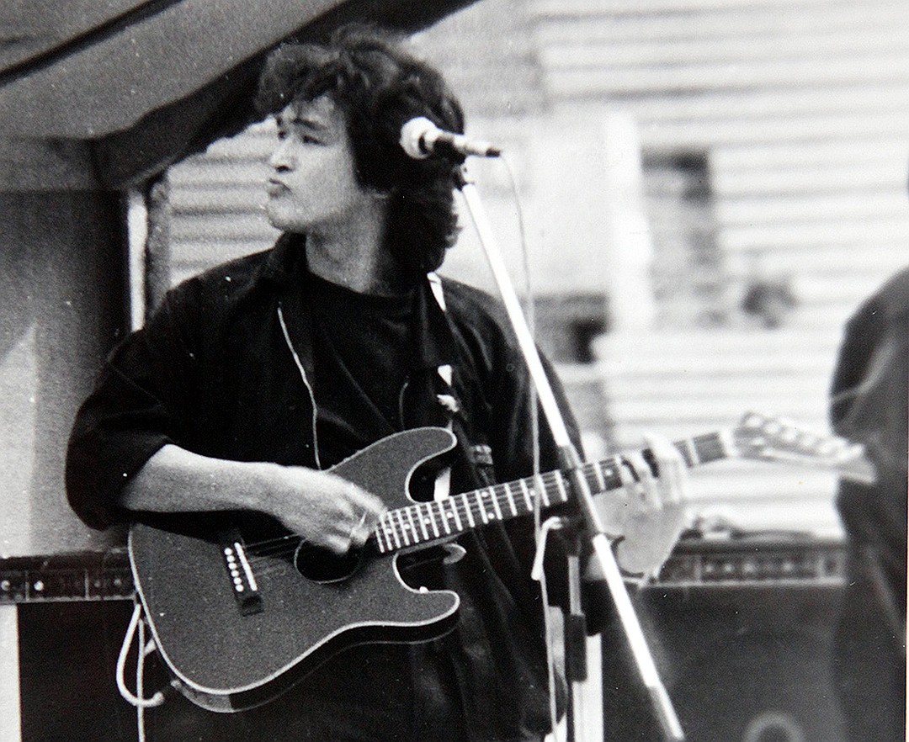
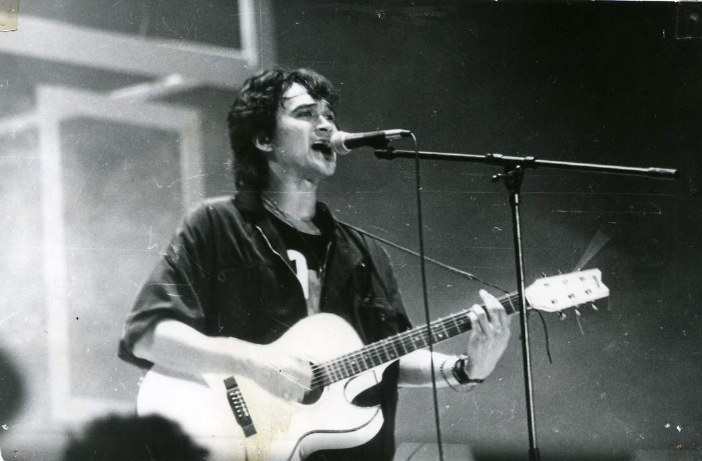
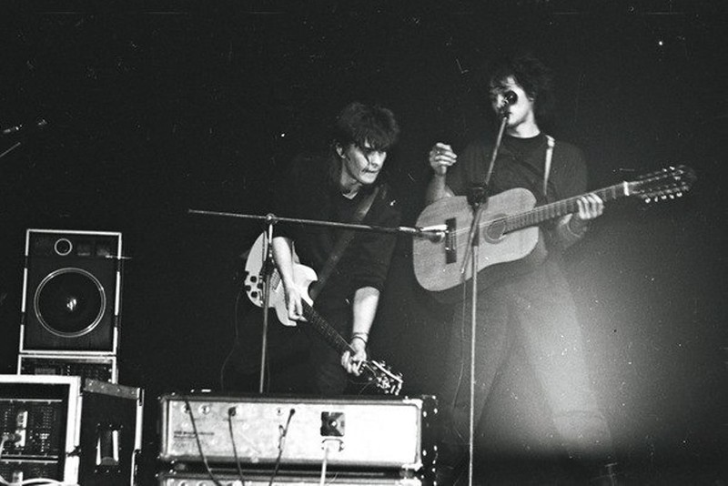

Главная
Солист легендарной группы
Гитарист
Барабанщик
все про кино
Табы "Пачка Сигарет"
Гитары великого Виктора Цоя
Модель гитары
Изображение
Ссылка
Kramer Ferrington

вики
Washburn AE

вики
Двенадцатиструнная акустическая гитара Ленинградской фабрики им. Луначарского

вики